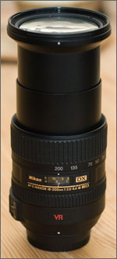
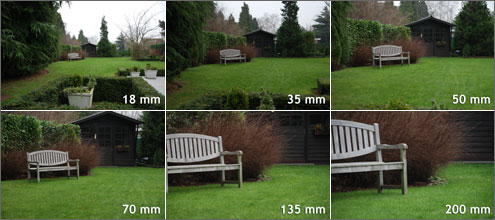

Verschillende soorten lenzen
Er zijn over de jaren heen veel verschillende lenzen ontwikkeld. Sommige worden veel gebruikt andere minder. Elke lens heeft voor en nadelen en elke foto heeft een bepaalde ideaale lens.
Een fototoestel vangt licht op, en legt dit vast op de sensor of op een filmpje. Dat licht komt de camera binnen via de opening vooraan. Op die opening zit een lens gemonteerd. “Lens” is eigenlijk een verkeerd woord. Als we over de lens van een camera spreken, bedoelen we eigenlijk het objectief. Eén objectief bestaat uit meerdere lenzen.
- Objectieven zijn op te delen in twee groepen:
- - Objectieven met vaste brandpuntsafstand.
- - Objectieven met variabele brandpuntsafstand.
Objectieven met een vaste brandpuntsafstand zijn lenzen waarvan de brandpuntsafstand niet kan aangepast worden. Er kan m.a.w. niet gezoomd worden met deze lenzen, in tegenstelling tot objectieven met een variabele brandpuntsafstand, waar je door het draaien aan een ring het objectief en dus de brandpuntsafstand langer kan maken.
Een ander criterium om objectieven op te delen, is in de beeldhoek die ze aankunnen. Een objectief met een korte brandpuntsafstand ‘ziet’ een wijde hoek (een breedhoek), terwijl een objectief met een lange brandpuntsafstand heel ver ziet, maar wel onder een beperkte hoek.
- Aan de hand hiervan worden objectieven vaak opgedeeld in drie categorieën:
- - Groothoek
- - Standaard
- - Tele
Waarbij groothoeklenzen de objectieven zijn die als minimale afstand 12 mm of zelfs minder hebben, en eventueel een speciale fish-eye-lens hebben, om een beeldhoek van 180 graden of zelfs meer te hebben.
Standaard hoeken variëren tussen de 20 en de 70 mm. De kitlens bij een Nikon D40 bv. is een 18-55mm zoomlens, en wordt gezien als een standaardlens.
Tele-objectieven of zoomlenzen tenslotte gaan van 70 mm tot 200 of zelfs meer. Een 70-200 mm bv. is tele-objectief, waarmee je flink kan inzoomen.
Om het onnodig wisselen van objectieven te vermijden, bestaan er ook zoom-objectieven die de hele reeks van standaard tot tele dekken. Dit zijn superzooms. Mijn 18-200 mm objectief bv. gaat van een vrij grote hoek naar een vrij verre zoom. Deze objectieven hebben als voordeel hun veelzijdigheid, maar als nadeel de grotere vervorming.
